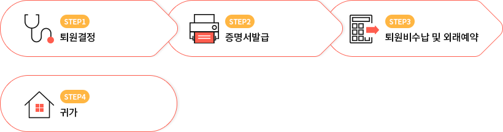

입퇴원안내
- 입원절차 안내
-
step2 입원수속 및 입원예약 > step3 입원">
- 주치의로부터 입원 권유를 받으신 분은 입원 결정서를 입·퇴원계(6층)에 제출하여 주십시오.
- 입원 당일 정해드린 시간에 건강보험증과 신분증을 가지고 보호자와 함께 입·퇴원계에 오셔서 입원수속을 하십시오.
- 입원계에서 입실 가능한 시간을 확인하신 후 주치의 진료실 간호사와 함께 입원 병동 간호사실로 가십시오.
- 병실 사정에 따라 다소 기다릴 수도 있습니다. 병실에 입실하시면 환자복으로 갈아 입으시고, 병동 간호사의 안내를 받으십시오.
- 입원시 준비물품
-
- 병실용품 : 입원하시는 분은 다음 물품을 준비하시거나, 지하1층 GS25시에서 구입 가능합니다.
(물컵, 휴지, 수건, 치약, 칫솔, 슬리퍼)
- 환자복과 침구는 병원에서 지급해 드립니다. (보호자용 침구는 제공되지 않습니다)
- 특실에서는 티슈, 세숫비누, 전자레인지, 쟁반 등이 제공됩니다.
- 화재 위험이 있는 인화 물질이나 전열기, 심한 냄새가 나는 음식, 술, 화투, 현금이나 귀중품 등은 가져오지 마십시오.
- 퇴원절차 안내
-
 step2 증명서발급 > step3 퇴원비수납 및 외래예약 > step4 귀가">
- 진료비 미심사 퇴원
-
- 정상 근무시간 외 혹은 휴일 퇴원의 경우 정확한 진료비 심사에 어려움이 있어 예상진료비 납부 후 퇴원하시게 됩니다.
- 추후 진료비 심사가 완료되면 원무팀 입·퇴원계에서 정산하시면 됩니다. 정산시에는 퇴원시 발급된 진료비 계산서와 결제카드, 환자 신분증을 지참하여 환자본인이 내원하시기 바랍니다.
- 환자 본인의 내원이 어려운 경우 문의바랍니다. (☎ 입·퇴원계 전화번호 000-0000-0000)